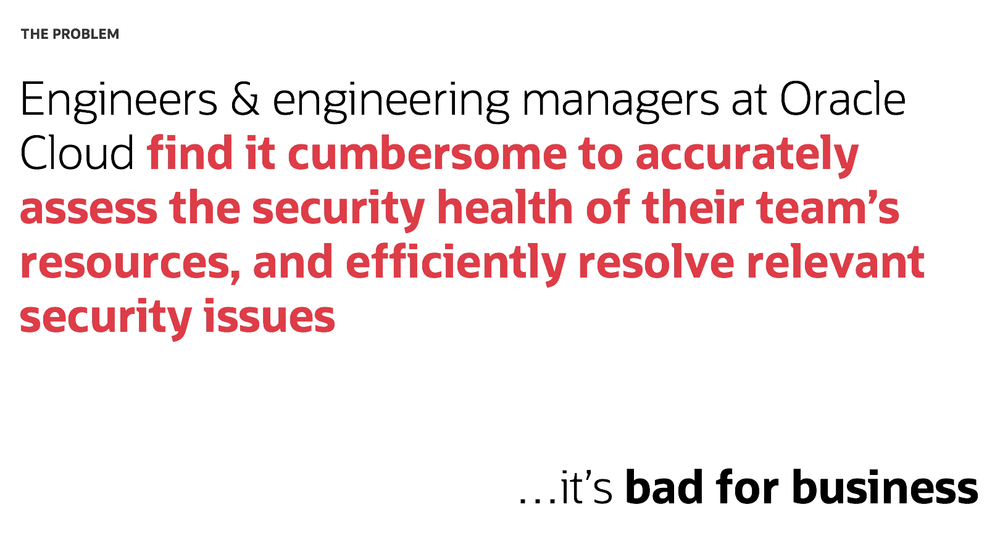
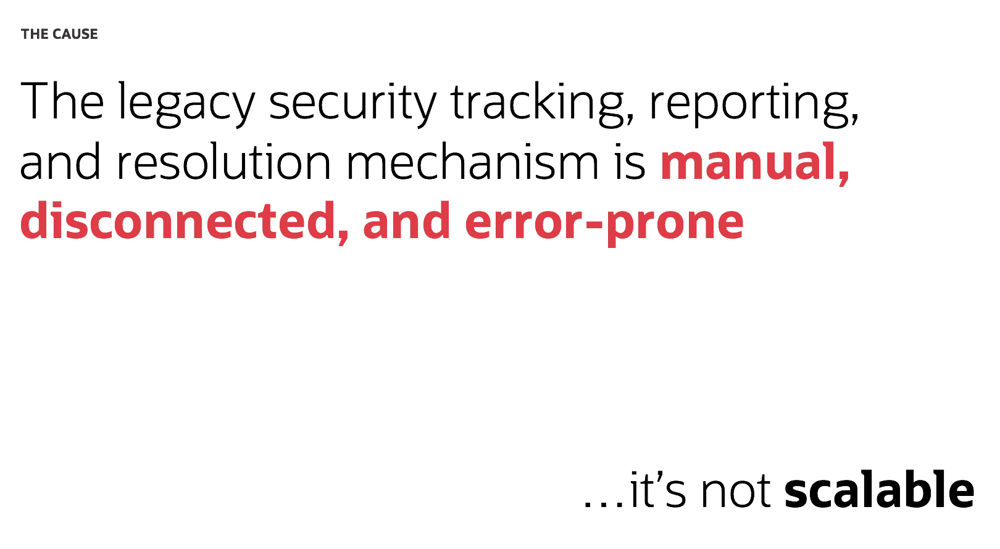
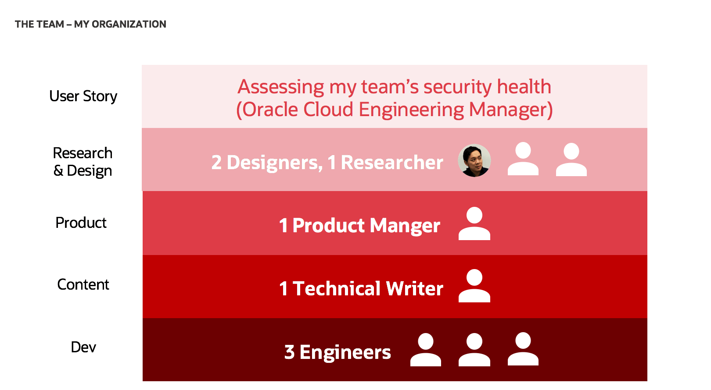
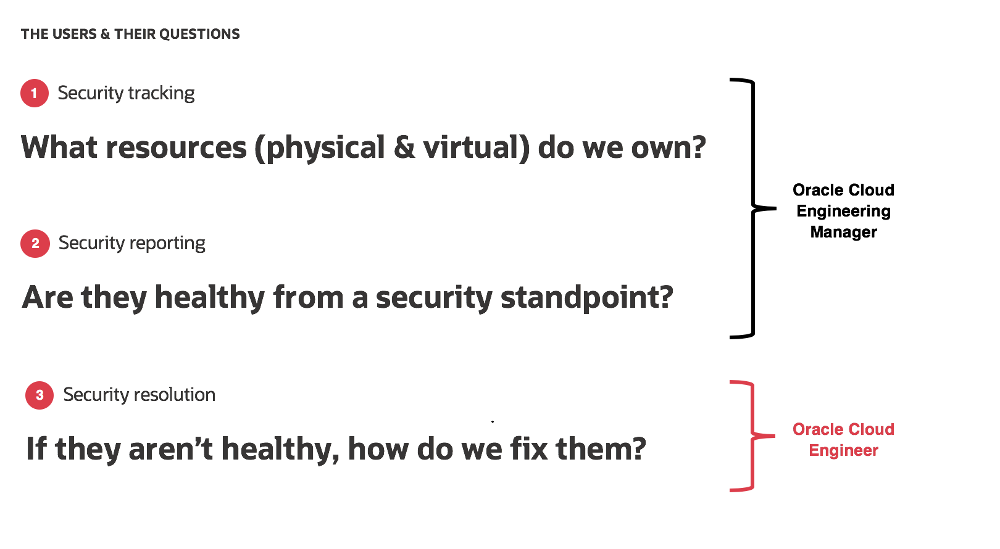
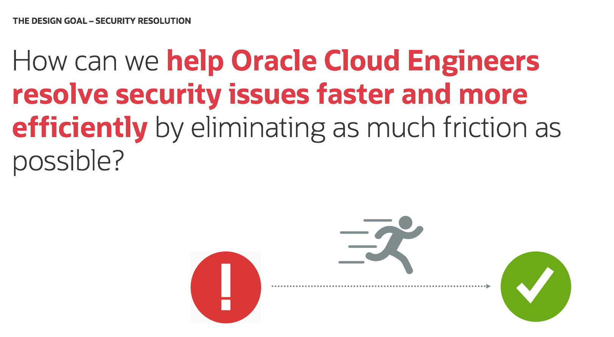

Larry Ellison speaking about the company's critical focus on Security (as part of its strategic investment into the cloud) at Oracle OpenWorld 2019 - Oracle's annual tech conference
The problem space
Keeping the Oracle Cloud secure is a task of paramount importance that holds a central role in Oracle's customer experience strategy. As an organization, possessing a robust security posture would provide Oracle Cloud with the foundation that enables customers to trust it with their most valuable workloads. In this respect, the company's ability to provide leading security requires that it possesses a seamless, effective, and accurate security tracking, reporting, and resolution mechanism.
As a company, Oracle Cloud wasn't doing a very good job in this regards. In fact, in its older days, Oracle Cloud was facing a very common and critical problem:
And it wasn't hard to trace down the cause of this problem:
In a nutshell, everything from security tracking, reporting, to resolution, was tracked and managed via third-party, human-driven tools such as Jira. The company was committing too many resources to such a manual effort, and it wasn't the kind of mechnanism that was suitable for a rapidly growing business that Oracle Cloud needed to be.
The users and their questions
To tackle this problem, a product team of two designers (including myself as the lead designer), one researcher, three UI engineers, a product manager, a technical writer, and a partnering backend engineering unit were assembled to revamp Oracle Cloud's security tracking, reporting, and resolution experience. Overall, our work revolved around two primary users and their corresponding user stories:
As we set out approach the problem from the start, we spent a lot of time talking to users to better understand their mental model. What we accordingly discovered was quite simple. Good security ultimately boils down to three big questions that an organization has to be able to answer:
While the first two, which relate more to security tracking and reporting, would be more relevant to engineering managers. The second two are more than often asked by IC-level engineers - those who own the task of actually getting into the trenches and resolving the security issues themselves.
The technology and leadership direction
As a cloud provider, Oracle Cloud did recognize and validate this problem, and ultimately the company understood that the solution to this challenge would have to be through automation. Or, in the fancy words of our leadership, autonomous security.
Simply speaking, what Oracle Cloud needed was to automate its security tracking and reporting processes, in order to enhance its security resolution mechanism and win more business. That essentially was the direction we received from the company's senior leadership. And it was basically how we envisoned Security Central as Oracle Cloud's go-to cloud security monitoring tool.
Design goals
Every design project needs a guiding design goal. Through early conversations with our users and the team's initial understanding of the problem, the design goals we defined were very straightforward:
Success metrics
In order to better track and measure the progress of our UX/UI enhancements, we collaborated with product and business leaders to define certain product / business success metrics that were meant to help guide our overall product development directions:
Early design
Conducting user research was extremely critical in opening more doors to better understanding users' contexts. Equipped with this knowledge gain, the design team produced early design sketches to visualize plausible user journeys / workflows and how different stages throughout these flows might be mapped to the defined user questions:

User journey mapping as an exercise created opportunities for the design and product team to expand further on the user workflows and envision how different interfaces / views could be designed to support them.
Competitive analysis
Part of understanding users and their context is understanding the ecosystem within which they operate, and part of understanding this ecosystem required an analysis of various competing providers of the same product, service, or simply solutions to similar UX problems. Competitive analysis was therefore a crucial aspect of the process. Not only did it serve as a source for creative inspiration, it also helped surface better understandings around what works and what doesn't, thereby revealing opportunities where unarticulated user needs might be addressed:

Heuristic evaluation was a common exercise that often accompanied these competitive analyses:

User testing
To avoid designing in a vacuum and ensure that a highly collaborative process was followed, coordination and support across all relevant stakeholders were involved. Amongst different stakeholder groups, users played the most critical role. They too were involved in the design process in the form of user testing.
Selected examples of how user testing helped to reveal design gaps and influence design directions
1. Upcoming Key Dates - Since Security Central's inception, users have repeatedly expressed a desire to have a "timeline visualization". Essentially, they needed an effective mechanism that could help provide better visibility into relevant security timelines (i.e. host patching) and the important dates / gates they should be aware of. Early design explorations made use of common time-related patterns such as the static vertical timeline component (top) or the calendar (bottom):
User testing, however, revealed that:
- Users need a timeline view that spans across two consecutive months. Some cycles start on the 15th of every month and last for the entire thirty days.
- Rather than just telling them of upcoming due dates, users prefer the system to dynamically inform them whether they actually have to care about these due dates (based on their custom environments). For example, if they have completed host patching for the current cycle, they wouldn't have to worry about any upcoming patching-related due dates. Users need the system to communicate this message effectively.
- Security is critical by nature, and users need to be (subtly) given a sense of urgency when it comes to security matters. Informing them of upcoming due dates is nice, but they need to better understand the implications / consequences of not hitting these due dates.
- The "timeline visualization" is an opportunity where users could be guided towards solutions for a set of particular issues. They have a deadline coming up, they know they have stuff to work on, they are informed of the implications of not addressing them, but where do they start? Again, such messaging needs to be intelligently communicated to users.
These learnings in turn presented the design and product team with an opportunity to modify the "Upcoming Key Dates" card on the Summary Dashboard view in order to better serve user needs:

2. My Organization - Early user research studies have uncovered an opportunity for Security Central to provide a visualization of Oracle Cloud's security health across different business organizations and their corresponding leaders (VP-level). Essentially, users would like to view how an organization under a specific VP within Oracle Cloud is performing in terms of security, and how these aggregated data can drill down to the managers and teams that report up to that particular VP. Naturally, early design explorations made use of common organization-related components like the vertical org-chart view below:

User testing, however, revealed that:
- Users have difficulties trying to quickly assess the view above and seamlessly pull the most critical numbers from it. Their attention is often distracted and scattered across the entire page, without the critical areas getting the attention they deserve.
- Using an org-chart view makes it difficult for users to conduct a holistic assessment of all the different direct reports and teams that report up to a specific leader. If a VP, for instance, has more than twenty direct reports, users would have to scroll down indefinitely in order to get all the data they need. They prefer to be able to achieve this goal with only a quick glance.
- The org-chart view leaves for too much unneccessary empty real estate.
These learnings in turn presented the design and product team with an opportunity to modify the "My Organization" view in order to better serve user needs:

Overall, approaching user testing with agility and the accompanying iterative user-centric design process have allowed us to improve Security Central's overall user experience. And these improvements are certainly tracked throughout the process:
High-fidelity design and prototype
A quick snapshot of a few high-fidelity prototypes created. These were used for a variety of purposes, including design-dev communication and leadership presentations.
Resolving a security issue

Assessing a team's security health

Design / Product Opportunities
Designing for Security Central was a super exciting project, as it presented endless opportunities where design and technology can join force to create a real impact for users and on the business. Throughout the design and development process, multiple areas have been identified as future design aspirations the team could take on to make Security Central an even more delightful tool for users:
1. Better insights and visibility - Data is consumed by people in many different ways. It can also be misinterpreted unintentionally if it’s not presented carefully. We have the ability to slice and dice and visualize data even further in a manner that can be easily glance-able, understood, and consumed by users to help them take action and complete their tasks successfully.
2. Birds-eye views - What if users could see a birds-eye view of their organization’s security that is both interactive and displays relevant information along the path. See problem areas at-a-glance, tap into a section to view more details and take action without leaving the main page.
3. Anticipating actions and needs - We know our users, their roles, and levels of permission. We have the opportunity to anticipate what they might need, present that information to them quickly and learn over time to improve the suggestions that we make to help our users find what they need and complete their tasks quickly.
4. Predictions and suggestions - We have the ability to become a service to our customers by continuously working in the background to monitor internal and external data and make suggestions based on changing environments, situations and information needed to complete a task.
5. Dynamic forecasting and adjusting - We already integrated multiple databases and information across global teams. We have the ability to forecast needs and suggest how and where to make adjustments across the entire security process.
6. Personable and human - We already have a relationship with our users as they use our products and interact with our brand. Why not speak to them conversationally and present information in a way that feels personable and human. After all, our products work for our users, not the other way around. Our products offer a service to our users that helps them become more efficient in their jobs. Why not present information in a way that makes us feel like an extension of their team.
7. Omni-channel collaboration - Our users shouldn’t have to go to multiple locations and hoops to access the people that they need. We have the opportunity to provide one space where teams can collaborate and communicate to help each other complete multi-channel tasks more efficiently.
8. Contextual content - Don’t make users dig into different areas of the product to obtain different documents and information they need to complete a task. Show the relevant information in one place by seamlessly integrating information, documents, and functions into single, easy-to-consume views.
9. Going external - Security Central has proven its value with measurable benefits as an internal tool within Oracle Cloud. And there shouldn't be any limitations to what it can do for external customers as well. With Oracle Cloud offerings becoming increasingly diverse in breadth and depth, along with third-party integrations, customers will start caring deeply about the security health of their own built environments and systems on top of the Oracle Cloud infrastructure. Security Central, inevitably, will have the potential to become the one stop shop for all things security-lated consumable by external customers too.
Special Bonus: Introducing Redwood
Oracle recently introduced its brand new user experience design language - Redwood - to the world at its 2019 OpenWorld conference. This marks an exciting beginning for the company and its brand, and is the fruit of one year worth of tireless creative exploration, execution, supported by collaborative efforts that span across various strategic organizational functional areas. With the launch of Redwood, Oracle's vision is to completely revamp its customer experience with its products and brand. In the words of an Oracle design executive:
"Redwood is for our products user interfaces and for telling our story. It's for both our digital and our physical experiences. It's a new design system for Oracle."
It truly is an exciting time to be a UX Designer at Oracle, and it certainly is a huge design opportunity for Security Central to elevate to an experience status that will not only be functional and reliable, but also usable and delightful in such a way that users will love and consistently emerge with a positive emotional outcome.